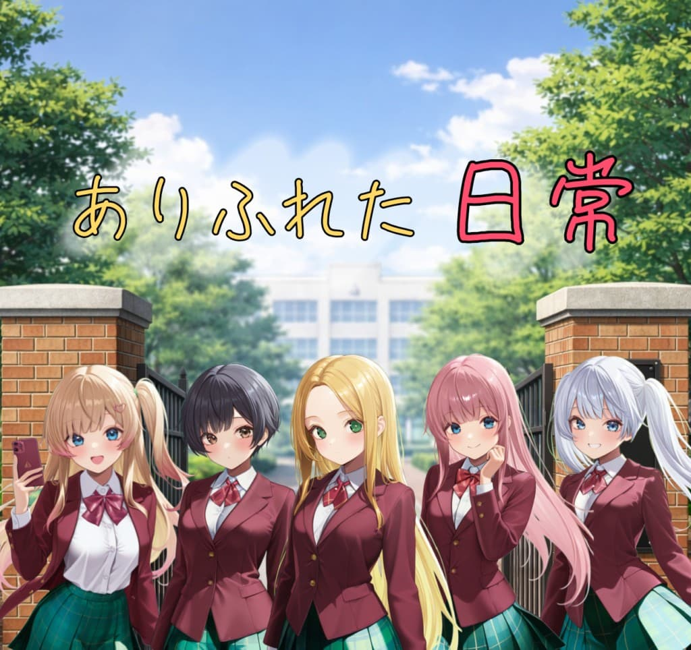

く<!DOCTYPE html>
<html lang="ja">
<head>
<meta charset="UTF-8">
<meta name="viewport" content="width=device-width, initial-scale=1.0">
<title>タイトル未定</title>

<style>
body {
  margin: 0;
  overflow: hidden;
  font-family: sans-serif;
  background: black;
}

/* 全体 */
.scene {
  position: relative;
  width: 100%;
  height: 100vh;
}

/* 画像共通 */
img {
  user-select: none;
  pointer-events: none;
}
/* タイトル */
 .titleImg {
  position: absolute;
  width: 100%;
  height: auto;
  top: 50%;
  transform: translateY(-50%);
}

/* 背景 */
.bg {
  position: absolute;
  width: 100%;
  height: 100%;
  object-fit: cover;
}

/* キャラ */
.chara {
  position: absolute;
  bottom: 0;
  width: 100%;
}

/* 前景 */
.front {
  position: absolute;
  width: 100%;
  height: 100%;
  object-fit: cover;
}

/* テキスト */
.textbox {
  position: absolute;
  bottom: 70px;
  width: 100%;
  padding: 16px;
  background: rgba(0,0,0,0.5);
  color: white;
  text-shadow: 0 0 5px black;
  box-sizing: border-box;
}

/* キャラのセリフ */
.charaTalk {
  color: white;
}
/* 主人公のセリフ */
.main {
  color: #d0e6ff;
}

/* 地の文 */
.narration {
  color: #cccccc;
}

/* 心の声 */
.thought {
  color: #aaaaaa;
  font-style: italic;
}

/* その他 */
.other {
  color: #bbbbbb;
  font-style: italic;
}
  
  /* UI */
.ui {
  position: absolute;
  bottom: 0;
  width: 100%;
  display: flex;
  justify-content: space-around;
  background: rgba(0,0,0,0.3);
}

button {
  flex: 1;
  padding: 12px;
  font-size: 16px;
  color: white;
  background: transparent;
  border: none;
}

/* タイトル画面 */
#titleScreen {
  position: absolute;
  width: 100%;
  height: 100%;
}

.titleText {
  position: absolute;
  top: 25%;
  width: 100%;
  text-align: center;
  font-size: 32px;
  color: white;
  text-shadow: 0 0 10px black;
}

.startBtn {
  position: absolute;
  bottom: 100px;
  width: 100%;
  text-align: center;
}
  #choices {
  position: absolute;
  top: 53%;
  left: 50%;
  transform: translate(-50%, -50%);
  display: flex;
  flex-direction: column;
  align-items: center;
  gap: 16px;
  z-index: 10;
}

#choices button {
  width: 220px;
  padding: 14px 20px;
  font-size: 18px;
  color: white;
  background: rgba(0, 0, 0, 0.35);
  border: 1px solid rgba(255, 255, 255, 0.2);
  border-radius: 12px;
  backdrop-filter: blur(5px);
  box-shadow: 0 4px 10px rgba(0,0,0,0.3);
  transition: all 0.1s ease;
}

#choices button:active {
  transform: scale(0.95);
  background: rgba(0, 0, 0, 0.5);
}
  
</style>
</head>

<body>

<!-- タイトル画面 -->
<div id="titleScreen">
  <div class="titleText">タイトル未定</div>
  
  <div class="startBtn">
    <button onclick="startGame()">スタート</button>
  </div>
</div>

<!-- ゲーム画面 -->
<div id="gameScreen" class="scene" style="display:none;">

  
  
  

  <div class="textbox" id="text"></div>

  <div id="text" class="thought">
    
  <div id="choices" style="display:none;">
  <button onclick="choose('wake')">起きる</button>
  <button onclick="choose('sleep')">2度寝</button>
</div>
  
  <div class="ui">
    <button onclick="next()">▶ 次へ</button>
    <button>スキップ</button>
    <button>オート</button>
    <button>ログ</button>
  </div>

</div>

<script>

let step = 0;

function startGame() {
  document.getElementById("titleScreen").style.display = "none";
  document.getElementById("gameScreen").style.display = "block";
  next();
}

function next() {

  const bg = document.getElementById("bg");
  const chara = document.getElementById("chara");
  const front = document.getElementById("front");
  const text = document.getElementById("text");

  switch(step) {

    case 0:
      bg.style.display = "none";
      chara.style.display = "none";
      front.style.display = "none";
      setText("チュン チュン", "narration");
      break;

    case 1:
      bg.style.display = "none";
      setText("んっ…", "main");
      break;
    
    case 2:
      bg.style.display = "none";
      setText("チュン チュン", "narration");
      break;
    
    case 3:
      bg.style.display = "none";
      setText("う～ん…", "main");
      break;
    
    case 4:
      bg.style.display = "block";
      bg.src = "images/bg_myroom_blur_strong.jpg";
      setText("もう朝かよ……", "thought");
      break;

    case 5:
      showChoices();
      break;

    case 6:
      bg.style.display = "block";
      bg.src = "images/bg_myroom_blur_strong.jpg";
      setText("まだ余裕だな…", "thought");
      break;
    
    case 7:
      bg.style.display = "none";
      setText("…", "main");
      break;

    case 8:
      bg.style.display = "none";
      setText("……", "main");
      break;
    
    case 9:
      bg.style.display = "none";
      setText("………", "main");
      break;
    
    case 10:
      bg.style.display = "none";
      setText("…………", "main");
      break;
    
    case 11:
      bg.style.display = "none";
      setText("コン コン", "narration");
      break;
    
    case 12:
      bg.style.display = "none";
      setText("………", "main");
      break;
    
    case 13:
      bg.style.display = "none";
      setText("ガチャ", "narration");
      break;
    
    case 14:
      bg.style.display = "none";
      setText("まだ、寝てるよ…", "chara");
      break;
    
    case 15:
      bg.style.display = "none";
      setText("はぁ……", "chara");
      break;
    
    case 16:
      bg.style.display = "none";
      setText("そろそろ、起きなよ。", "chara");
      break;
    
    case 17:
      bg.style.display = "none";
      setText("……", "main");
      break;
    
    case 18:
      setText("いい加減に…", "chara");
      break;
    
    case 19:
      setText("起きろっ！！", "chara");
      break;

    case 20:
      bg.style.display = "block";
      bg.src = "images/bg_myroom_blur_strong.jpg";
      chara.src = "images/chara_sister_blur_strong.png";
      chara.style.display = "block";
      front.src = "images/bg_myroom_blur_strong.png";
      front.style.display = "block";
      setText("う～～ん もう少しだけ……", "main");
      break;

    case 21:
      setText("もう、何時だと思ってるの？", "chara");
      break;
    
    case 22:
      setText("う～ん 何時…？", "main");
      break;
    
    case 23:
      setText("ご飯食べる時間無くなるよ！", "chara");
      break;
    
    case 24:
      bg.src = "images/bg_myroom_blur_weak.jpg";
      chara.src = "images/chara_sister_blur_weak.png";
      chara.style.display = "block";
      front.src = "images/bg_myroom_blur_weak.png";
      front.style.display = "block";
      setText("わたし、先に行くからね。", "chara");
      break;
    
    case 25:
      setText("遅刻しないでよね", "chara");
      break;
    
    case 26:
      setText("わかったよ…", "main");
      break;
    
    case 27:
      chara.style.display = "none";
      front.style.display = "none";
      setText("……", "main");
      break;

    case 28:
      setText("いってきま～す", "chara");
      break;
    
    case 29:
      setText("……", "main");
      break;
    
    case 30:
      setText("遅刻するわよ～？", "other");
      break;
    
    case 31:
      bg.src = "images/bg_myroom_a.jpg";
      setText("……はっ！", "main");
      break;
    
    case 32:
      setText("やべっ！", "main");
      break;
    
    case 33:
      setText("遅刻だっ！", "main");
      break;
    
    case 34:
      bg.style.display = "none";
      chara.style.display = "none";
      front.style.display = "none";
      setText("ちょっと、ご飯は～？", "other");
      break;
    
    case 35:
      setText("…時間無いから～", "main");
      break;
    
    case 36:
      setText("いってきます！", "main");
      break;
    
    case 37:
      chara.style.display = "none";
      front.style.display = "none";
      bg.style.display = "block";
      bg.src = "images/bg_road_home.jpg";
      setText("……走るか？", "thought");
      step = 201;
      return;
    
    case 38:
      setText("𝐜𝐨𝐦𝐢𝐧𝐠 𝐬𝐨𝐨𝐧…", "narration");
      break;
    
    case 51:
      bg.style.display = "block";
      bg.src = "images/bg_living.jpg";
      setText("ふぁ～～……", "main");
      break;

    case 52:
      setText("おはよ……", "main");
      break;
    
    case 53:
      chara.style.display = "block";
      chara.src = "images/chara_sister_surprise.png";
      setText("おはよう。", "chara");
      break;

    case 54:
      bg.style.display = "block";
      chara.src = "images/chara_sister_laugh.png";
      setText("…珍しく、今日は早起きだねw", "chara");
      break;
    
    case 55:
      setText("あぁ…目が覚めちゃったよ。", "main");
      break;

    case 56:
      chara.src = "images/chara_sister_grin.png";
      setText("ふぅ～ん♪", "chara");
      break;

    case 57:
      setText("…何か、いい事でもあるのかな？", "chara");
      break;
    
    case 58:
      setText("ナニモナイヨ…", "main");
      break;
    
    case 59:
      setText("…なんで？カタコトwww", "chara");
      break;
    
    case 60:
      setText("ニヤニヤすんな…", "main");
      break;
    
    case 61:
      chara.src = "images/chara_sister_laugh.png";
      setText("してないよぉ～www", "chara");
      break;
    
    case 62:
      setText("くっ…もういい…", "main");
      break;
    
    case 63:
      setText("学校いってくる", "main");
      break;
    
    case 64:
      chara.src = "images/chara_sister_anger.png";
      setText("あっ！こら、待ちなさい！", "chara");
      break;
    
    case 65:
      setText("………", "chara");
      break;
    
    case 66:
      setText("…久しぶりに", "chara");
      break;
    
    case 67:
      setText("一緒にいけると思ったのに", "chara");
      break;
    
    case 68:
      chara.style.display = "none";
      front.style.display = "none";
      bg.style.display = "block";
      bg.src = "images/bg_road_home.jpg";
      setText("やれやれ…", "thought");
      break;
    
    case 69:
      setText("しかし、早すぎたか？", "thought");
      break;
    
    case 70:
      break;
    
    default:
      text.innerText = "𝐜𝐨𝐦𝐢𝐧𝐠 𝐬𝐨𝐨𝐧…";
      break;

    case 201:
      chara.style.display = "none";
      front.style.display = "none";
      bg.style.display = "block";
      bg.src = "images/bg_road_home.jpg";
      setText("おっはよ～", "other");
      break;

    case 202:
      setText("…ん？", "main");
      break;

    case 203:
      chara.style.display = "block";
      chara.src = "images/chara_gyaru_smile.png";
      setText("  ", "main");
      break;
    
    case 204:
      setText("…おはよ", "main");
      break;
    
    case 205:
      setText("…って", "main");
      break;
    
    case 206:
      setText("はぁ… 随分と余裕だなぁ？", "main");
      break;
    
    case 207:
      setText("…ん？ なにが？", "chara");
      break;
    
    case 208:
      setText("…いや、聞いた俺が悪かった……", "main");
      break;
    
    case 209:
      setText("変なのぉ～♪", "chara");
      break;
    
    case 210:
      setText("オ マ エ ガ ナ…", "main");
      break;
    
    case 211:
      setText("女の子に、オマエとか言う？", "chara");
      break;
    
    case 212:
      setText("はい はい じゃあな", "main");
      break;
    
    case 213:
      setText("じゃあなって…", "chara");
      break;
    
    case 214:
      setText("行先は同じなんだから一緒にね♪", "chara");
      break;
    
    case 215:
      setText("えぇ～", "main");
      break;
    
    case 216:
      setText("えぇ～じゃない！ほら行こ♪", "chara");
      break;
    
    case 217:
      setText("やれやれ……", "thought");
      break;
    
    case 217:
      setText("はぁっ…急ぐぞ…", "main");
      break;
    
    case 218:
      setText("𝐜𝐨𝐦𝐢𝐧𝐠 𝐬𝐨𝐨𝐧…", "narration");
      break;
  }

  step++;
}

function setText(content, type) {
  const text = document.getElementById("text"); // ←追加

  text.innerText = content;

  text.className = "textbox"; // ←ここも修正（重要）

  if (type === "chara") text.classList.add("charaTalk");
  if (type === "main") text.classList.add("main");
  if (type === "narration") text.classList.add("narration");
  if (type === "thought") text.classList.add("thought");
  if (type === "other") text.classList.add("other");
}
  
function showChoices() {
  const choices = document.getElementById("choices");
  choices.style.display = "flex";
}

function choose(type) {
  document.getElementById("choices").style.display = "none";

  if (type === "wake") {
    step = 51;
  } else {
    step = 6;
  }

  next();
}
  
  /* 画面タップでも進む */
  document.addEventListener("click", function(e) {
  const choices = document.getElementById("choices");

  if (choices.style.display === "block") {
    return;
  }

  if (e.target.tagName !== "BUTTON") {
    next();
  }
});

</script>

</body>
</html>
